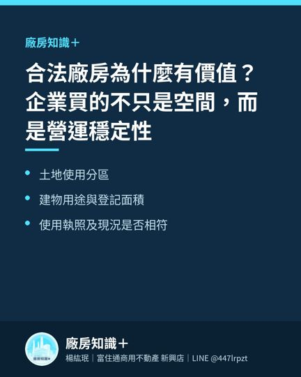
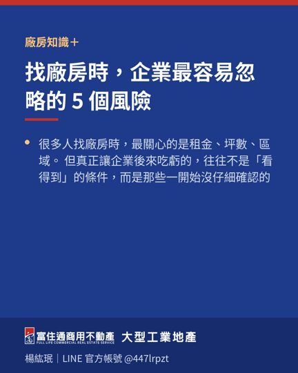

工業區與丁種建築用地有什麼不同？找廠前先弄懂「土地身分」
企業找廠房時，常會聽到「工業區」、「乙工」、「甲工」、「丁建」等名稱。
這些詞看起來都與工業使用有關，但它們並不是同一件事。
簡單來說，「工業區」通常是在都市計畫體系下的使用分區；「丁種建築用地」則多見於非都市土地使用編定。兩者所屬法規架構、允許使用項目、建蔽率、容積率、申請流程與周邊環境，都可能不同。
企業在比較時，可以從四個方向理解：
第一，土地法規體系不同。
都市計畫工業區依其分區類別及地方規定管理；丁種建築用地則要搭配非都市土地使用分區與使用地編定一起判斷，不能只看「丁建」兩個字。
第二，允許使用項目需要逐案確認。
不論是工業區或丁建，都不是所有產業、製程與設施都一定可以進駐。仍要依產業類別、污染程度、工廠登記、環保、消防與其他主管機關規定評估。
第三，周邊環境與交通條件可能不同。
都市計畫工業區通常較有聚落與公共設施概念；丁建物件可能位於非都市地區，個案之聯外道路、排水、公共設施與鄰近使用狀況差異較大。
第四，未來規劃與取得成本不同。
企業若要立即使用，會重視現成建物與登記條件；若要長期擴廠，還要評估土地形狀、建築規劃、道路、法規限制與後續申請時間。
因此，選擇時不要只問：
「這是不是工業地？」
而應該進一步確認：
- 屬於哪一種使用分區或使用地編定
- 建物用途與現況是否相符
- 企業產業是否符合允許使用
- 道路、排水、消防與環保條件
- 後續登記、擴建與變更的可行性
土地名稱只是起點，能不能符合企業營運，才是最後答案。
土地使用管制內容可能因位置、分區、編定及法令而異，實際應以最新土地資料、地方政府規定及主管機關審查為準。

相關文章
 企業準備擴廠，不要等空間不夠才開始找2026-08-06
企業準備擴廠，不要等空間不夠才開始找2026-08-06
合法廠房為什麼有價值？企業買的不只是空間，而是營運穩定性2026-08-04
找廠房時，企業最容易忽略的 5 個風險2026-07-29目前的物件
仁武區廠房｜大林鎮廠房｜岡山區廠房｜林園區廠房｜鳳山區廠房｜路竹區廠房・土地｜乙種工業區｜甲種工業區｜丁種建築用地｜大型廠房・千坪工業地｜廠房出租｜工業用地・土地